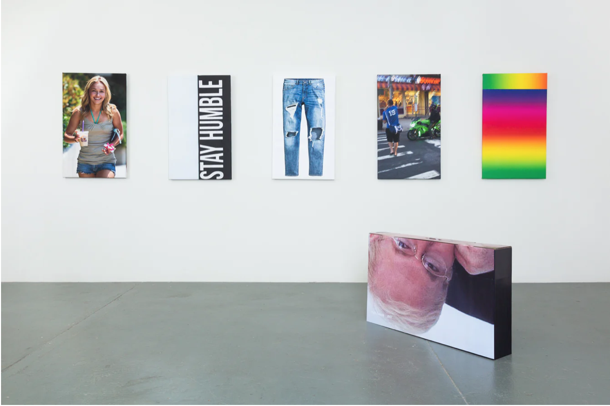

currentmood

Name: currentmood
Year: 2017
Medium: pigmented inkjet prints on canvas
Description: The exhibition "Cory Arcangel: currentmood" explores the ways in which digital technology impacts contemporary living. Arcangel explores how the digital environment shapes our emotions, behaviors, and interactions through installations, movies, and software modification. His artwork humorously examines memes, online culture, and the influence of social media on personal expression. Using internet-sourced resources, he produces new works of art that subvert notions of authorship and originality. This exhibition offers a provocative look at our digitally mediated life, encouraging spectators to consider how they relate to digital media and the wider ramifications of technology in our lives.
Exhibition: Independent, New York
Cultural Impact: This exhibition focuses on the dark reality of internet culture and how highly commercialized and controlled concept of personal expression online.
Link: canopycanopycanopy